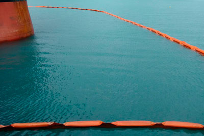

ESPECIFICAÇÕES DETALHADAS DAS BARREIRAS FLUTUANTES EQUIPADAS COM SENSORES:
- 1. Material Resistente: Feitas de materiais duráveis e resistentes à corrosão, como polietileno de alta densidade (HDPE) ou poliuretano, para garantir longevidade e desempenho em condições marítimas adversas.
- 2. Design Modular: Estrutura modular que permite a montagem e desmontagem fácil, bem como a extensão ou redução do comprimento conforme necessário.
- 3. Sensores Integrados: Equipadas com uma variedade de sensores, incluindo câmeras de alta resolução, sensores de movimento, sensores de proximidade e dispositivos de sonar, para detectar a presença e a quantidade de detritos plásticos e outros resíduos.
- 4. Tecnologia de Direcionamento: Sistemas automatizados que utilizam dados dos sensores para ajustar a posição das barreiras, direcionando os detritos para pontos de coleta designados.
- 5. Resistência às Ondas: Projetadas para permanecer eficazes em diferentes condições de maré e correntes oceânicas, com capacidade de flutuação que mantém a barreira na superfície da água.
- 6. Baixa Interferência Ambiental: Design que minimiza o impacto na vida marinha, permitindo que os organismos passem por baixo ou ao redor da barreira sem danos.
- 7. Sistemas de Ancoragem: Ancoradas ao fundo do mar ou conectadas a estruturas flutuantes para manter a posição e estabilidade, mesmo em condições de mar agitado.
- 8. Comunicação em Tempo Real: Equipadas com sistemas de comunicação que transmitem dados de sensores para uma central de monitoramento, permitindo ajustes em tempo real e monitoramento contínuo da eficácia da coleta.
- 9. Fácil Manutenção: Design que facilita a limpeza e a manutenção, com componentes facilmente acessíveis e substituíveis.
- 10. Energia Sustentável: Alguns modelos podem incorporar painéis solares ou outras fontes de energia renovável para alimentar os sensores e sistemas de comunicação, reduzindo a dependência de fontes externas de energia.